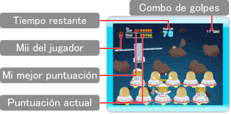

Pantalla de juego

Escenarios y niveles
Hay cuatro escenarios y tres niveles, cada uno con su propio límite de tiempo, velocidad y clase de topos. Al principio, solo podrás elegir el escenario "Jungle" (Jungla) en el nivel "Easy" (Fácil). Cuando avances, podrás elegir otros escenarios y niveles.
Modo cooperativo
Dos jugadores pueden formar equipo en este modo.
(Son necesarios dos Wii Remotes).
Cómo conseguir puntos
Cuanto antes golpees a los topos según salgan, más puntos conseguirás.
Combo de golpes
Puedes conseguir un combo si golpeas una serie de topos sin fallar una sola vez. De este modo conseguirás puntos adicionales. Cuantos más golpes acumules en el combo, más puntos adicionales conseguirás.

Topos que atacan
Los topos que llevan armas te atacarán salvo que los golpees enseguida. Si te atacan, perderás tu combo y no podrás golpear a ningún otro durante un tiempo.

Topos dorados
Si realizas determinadas acciones en el escenario, puede que aparezca un topo dorado. Estos topos otorgan más puntos que los topos normales.

Medallas
(solo en modo para un jugador)
Si logras determinada puntuación, puedes conseguir una medalla cuando termines un escenario. Dependiendo de la puntuación, la medalla puede ser de oro, plata o bronce.
Si consigues todas las medallas de oro, ganarás un martillo especial para jugadores expertos.
Clasificación de Conexión Wi-Fi de Nintendo (solo en modo para un jugador)
Cuando superes tu mejor puntuación, podrás enviarla a la Clasificación de Conexión Wi-Fi de Nintendo.